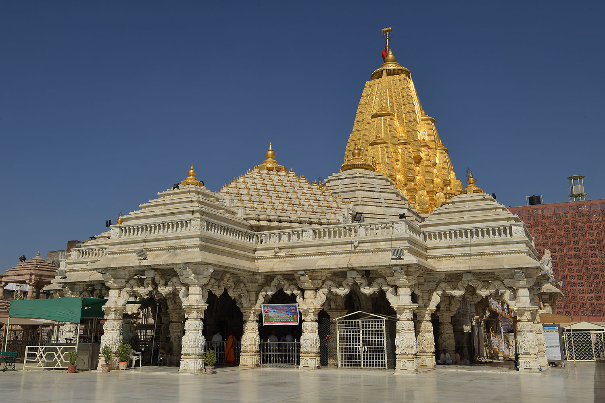
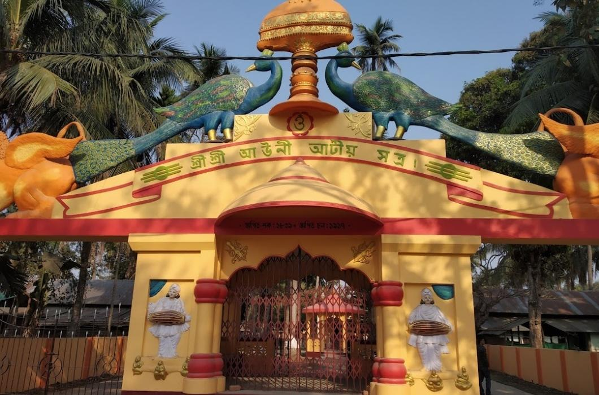

October is the second month of fall in the northern half of the world. In the southern half, it is the second month of spring. October's birth flower is the calendula. October is the tenth month in the Gregorian calendar and has 31 days.October is a great time to visit Karnataka as the weather is usually pleasant and comfortable. Visitors can also explore the bustling city of Kolkata, the hill stations of Darjeeling and Kalimpong, and the beaches of Digha and Mandarmani.
15' - 24' October -- Sharad Navratri
Sharad Navratri is observed in the month of September/ October. The Navratri festival is widely commemorated throughout the country with full enthusiasm. During this 9-day festival of Navratri, the 9 manifestations of Goddess Durga are worshipped. Each manifestation of Goddess Durga exemplifies a distinctive virtue and is believed to accord spiritual and worldly fulfillment.Each manifestation of Goddess Durga exemplifies a distinctive virtue and is believed to accord spiritual and worldly fulfillment. During the festival of Navratri, people from cities and villages come together to perform Navratri Puja in their houses or shrines epitomizing different manifestations of Goddess Durga. During this nine-day festival chanting of mantras, and renditions of bhajans or holy songs accompany the Navratri Puja rituals for nine consecutive days.
Naina Devi Temple, Nainital
A well known Shakti Peeths of Hindu religion, Naini Devi Temple is sacred place of great devotion in Nainital. Goddess Naini Devi is the diety of Naini Devi Temple and located at northern end of famous Nainital Lake. Goddess in this holy temple is represented by her two eyes. Devotees from far away place comes here to take blessing of Maa Naina Devi.The temple is located atop the Naina hillock near the Naini Lake, and draws thousands of devotees every year. There are many shops in close proximity to the Naina Devi Temple from where one can buy the prasad and pooja items.
The Kalkaji Temple
Kalkaji Mandir, also known as Kalkaji Temple, is a Hindu mandir or temple, dedicated to the Hindu Goddess Kali. The temple (mandir) is situated in the southern part of New Delhi, in Kalkaji, India, a locality that has derived its name from the temple and is located opposite the Nehru Place business centre and close to the Okhla railway station, Kalkaji Mandir metro station. Hindus believe that the image of the Goddess Kalka here is a self-manifested one.
24' October -- Dussehra
Dussehra also called Dasara or Vijayadashami, in Hinduism, holiday marking the triumph of Rama, an avatar of Vishnu, over the 10-headed demon king Ravana, who abducted Rama’s wife, Sita. The festival’s name is derived from the Sanskrit words dasha (“ten”) and Hara (“defeat”). Symbolizing the victory of good over evil, Dussehra is celebrated on the 10th day of the month of Ashvina (September–October), the seventh month of the Hindu calendar, with the appearance of the full moon, an event called the “bright fortnight” (shukla paksha). Dussehra coincides with the culmination of the nine-day Navratri festival and with the tenth day of the Durga Puja festival.
Chhinnamastika Temple
Chhinnamastika Temple dedicated to Goddess Chinnamasta is a Hindu pilgrimage centre and located in Rajrappa, in Ramgarh district of Jharkhand, India.The place attracts devotees from all parts of Jharkhand, and also from the neighbouring states of West Bengal and Bihar.The main attraction of the Chhinnamasta (also known as Chinnamastika) temple is the headless deity of Goddess Chinnamasta which stands on the body of Kamadeva and Rati in the lotus bed. The Chhinnamasta temple is popular for its Tantrik style of architectural design. Apart from the main temple, there are ten temples of various gods and goddesses such as the Surya (Sun God), Hanuman and Lord Shiva.
Ayodhya Temple
In Ayodhya,at Ram Mandir people celebrate the festival of Dussehra with enthusiasm. Ayodha is called the birthplace of Lord Ram. On the day of the festival, every corner of the city is brightened up with lights, and huge grounds consisting of the massive Ravan idols made up of firecrackers
The temple premises will include temples dedicated to deities Surya, Ganesha, Shiva, Durga, Vishnu and Brahma.
23'October -- Durga MahaNavmi
Maha Navami is celebrated on the navam (or the ninth) day of the Shukla paksha in the Indian month of Ashwina. According to the English calendar, this falls in September and October.According to mythological stories, Devi Durga's battle against Mahishasur, the king of demons, lasted for nine days. The ninth day is the final day before the Goddess won over the evil with her power and wisdom. So Maha Navami is also considered the eve of starting anything new on Vijaya Dashami.
Ambaji Temple
This is the principal shrine of a goddess who has been worshiped since the pre-vedic period. She is often referred to as Arasuri Amba, named for the location of the temple in the Arasur hills, near the source of the Saraswati river at the south-western end of the Aravali mountain range. Ambaji mata temple is one of the 51 Shakti Peethas. it is a major Shakti Peeth of India.

18' October -- Kati Bihu
The festival marks the relocation of the rice crop and the beginning of the fresh harvest season. Kati Bihu is an observation of service, penance, and the hope for a better future. The festival is celebrated across the state of Assam — although all Assamese tribes have their own rituals and interpretations of the day. Lamps are lit outside the homes, and a pathway of bamboos is constructed as a trail for the ancestors.

Aunati Temple
The idol which receives daily worship in the Satra temple (Manikuta) is the idol of Lord Krishna called Govinda. This idol was originally brought from Jagannath Kshetra (Puri, Orissa) and installed there with all the Vedic religious rituals. Apart from the main idol, there are also other worship idols in the other twelve branches of this famous Satra in various parts of Assam. The main branch of Auniati Satra is at North Guwahati, just opposite Guwahati city, which was established in 1915 A.D. by His Holiness Sri Sri Kamal Dev Goswami by possessing 60 bighas of land from Aswaklanta Devalaya.